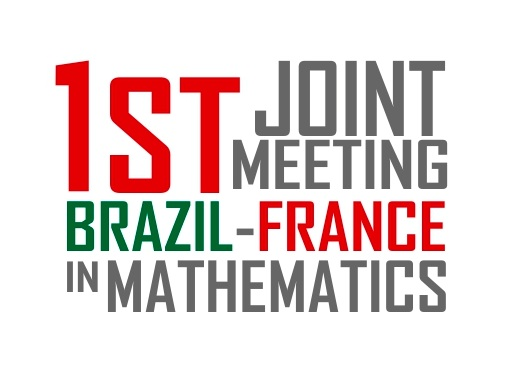

| . |
Todas as Ciências são Humanas, até as Exatas! |
WiL 2019 - 3rd Women in Logic Workshop
Vancouver, Canada, June 23, 2019
|
First Joint Meeting Brazil-France in Mathematics |
. |  |
XVIII Simposio Latinoamericano de Lógica Matemática
Universidad de Concepción, Chile, December 16-20, 2019
Renata de Freitas and Petrucio Viana, Set Venn diagrams applied to inclusions and non-inclusions, JoLLI 24:457-485, 2015, doi:10.1007/s10849-015-9227-2. [pdf]
Renata de Freitas, Leandro Suguitani and Petrucio Viana, Relation algebras throughout Galois connections. In V. Punocha and P. Dancak (Eds.): The Logica Yearbook 2013. College Publications, London, 2014, pp. 49-62. [pdf]
Renata de Freitas and Petrucio Viana, The second Venn diagrammatic system. T. Dwyer et al. (Eds.): Diagrams 2014, LNAI 8578:295-309, 2014. [pdf]
Renata de Freitas and Petrucio Viana, A graph calculus for proving intuitionistic relation algebraic equations. Diagrams 2012, LNAI 7352:324-326, 2012. [pdf]
Mario Benevides, Renata de Freitas and Petrucio Viana, Propositional Dynamic Logic with Storing, Recovering and Parallel Composition. LSFA'10, ENTCS 269:95-107, 2011. [pdf]
Paulo A.S. Veloso, Sheila R.M. Veloso, Petrucio Viana, Renata de Freitas, Mario Benevides and Carla Delgado, On Vague Notions and Modalities: a modular approach. Logic Journal of the IGPL 18:381-402, 2010, doi:10.1093/jigpal/jzp041. [pdf]
Renata de Freitas et al., On graph reasoning, Information and Computation 207:1000-1014, 2009, doi:10.1016/j.ic.2008.11.004. [pdf]
Renata de Freitas and Petrucio Viana, A note on proofs with graphs, Science of Computer Programming 73:129-135, 2008, doi:10.1016/j.scico.2008.08.002. [pdf]
Quem tiver interesse em participar de um projeto de Iniciação Científica, na área de Lógica e Métodos Formais, sob a orientação da Profa. Renata de Freitas, deve enviar histórico escolar atualizado para o email: freitas @ vm.uff.br.
Os IC-Seminários são uma série de seminários de Iniciação Científica que acontecem quinzenalmente no IME-UFF. Para maiores informações, visite a página de IC do IME-UFF.
Lugar de mulher é onde ela quiser
Quem são as mulheres no IME UFF?
Grupos da UFF combatem desigualdade de gênero
Pesquisadoras da UFF destacam o papel da mulher no universo acadêmico